Truyền thông là hoạt động quan trọng trong Chương trình Quốc gia về sử dụng năng lượng tiết kiệm và hiệu quả giai đoạn 2019 - 2030. Trang TTĐT Chương trình quốc gia về sử dụng năng lượng tiết kiệm và hiệu quả điểm lại các hoạt động truyền thông nổi bật trong năm vừa qua.
Thông điệp của Chiến dịch Giờ Trái đất năm 2023 là Tiết kiệm điện - Thành thói quen. Đây cũng là thông điệp của Chương trình tiết kiệm điện giai đoạn 2020 - 2025 thực hiện Chỉ thị 20 về về việc tăng cường tiết kiệm điện giai đoạn 2020 – 2025 của Thủ tướng Chính phủ. Thông điệp gửi đến cộng đồng không chỉ là tiết kiệm điện, tiết kiệm năng lượng và bảo vệ môi trường chỉ trong một giờ đồng hồ, mà mọi cá nhân, cộng đồng, doanh nghiệp phải thực hành nó thường xuyên trong suốt 365 ngày của cả một năm, để tiết kiệm điện, tiết kiệm năng lượng trở thành thói quen.

Giải chạy hưởng ứng Chiến dịch Giờ Trái Đất năm 2023 tại Việt Nam với Chủ đề là “Tiết kiệm điện - Thành thói quen”
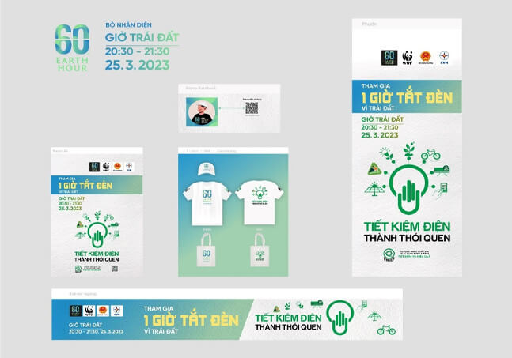
Với cự ly 5 km (tương đương 03 vòng hồ Hoàn Kiếm), hoạt động chạy hưởng ứng thu hút sự tham dự của hơn 1.000 vận động viên chuyên và không chuyên đến từ các đơn vị trực thuộc Bộ Công Thương và các bộ ngành liên quan, các tổ chức trong và ngoài nước, các hiệp hội ngành hàng, các doanh nghiệp, các câu lạc bộ chạy bộ, các cơ quan thông tấn báo chí và đông đảo người dân Thủ đô.
Chiến dịch Giờ Trái Đất năm 2023 có thông điệp Tiết kiệm điện – Thành thói quen
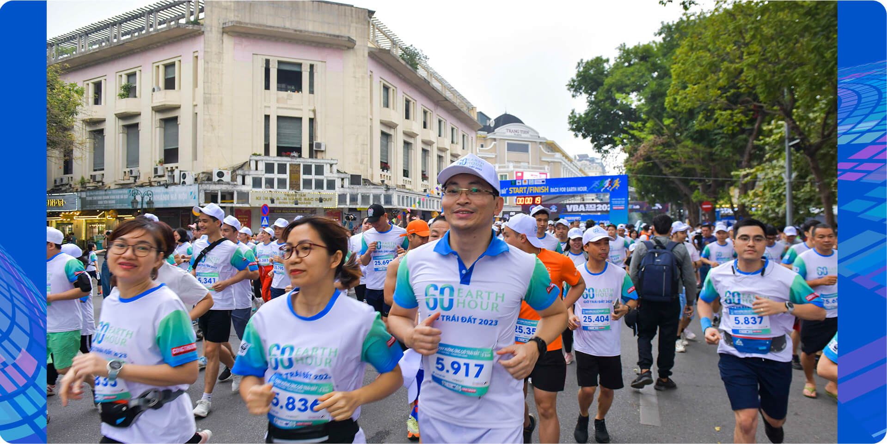
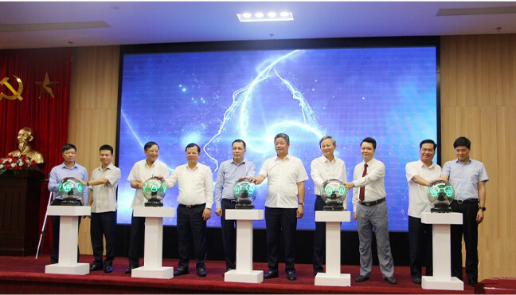
Lãnh đạo Bộ Công Thương và các địa phương, doanh nghiệp phát động tiết kiệm điện toàn quốc năm 2023
Ngày 22/5, Bộ Công Thương tổ chức Hội nghị phát động tiết kiệm điện toàn quốc năm 2023 nhằm cung cấp, cập nhật thông tin về tình hình cung ứng điện và phát động phong trào tiết kiệm điện trên toàn quốc.
Tại hội nghị, Bộ Công Thương kêu gọi và đề nghị các cấp, các ngành, các cơ quan, đơn vị, doanh nghiệp, các hộ gia đình và mọi tầng lớp nhân dân trên toàn quốc đồng tình ủng hộ, chung tay chia sẻ khó khăn với ngành Điện, tăng cường thực hiện đồng bộ, triệt để các biện pháp sử dụng điện tiết kiệm và hiệu quả
Theo đó, đề nghị các doanh nghiệp có kế hoạch sản xuất hợp lý, hạn chế huy động các thiết bị, máy móc có công suất tiêu thụ điện lớn vào giờ cao điểm, đồng thời chú trọng lắp đặt các nguồn năng lượng tái tạo sử dụng tại chỗ để giảm tiêu thụ điện từ lưới điện quốc gia; các hộ gia đình và người dân thường xuyên thực hành thói quen sử dụng điện tiết kiệm, hiệu quả, như: tắt các thiết bị điện khi ra khỏi phòng, thay thế, sử dụng các trang thiết bị hiệu suất cao, tiết kiệm điện; hạn chế sử dụng các thiết bị điện có công suất lớn trong các giờ cao điểm…; cùng lan tỏa thông điệp “Tiết kiệm điện, thành thói quen” đóng góp vào sự ổn định và bền vững của hệ thống điện quốc gia.
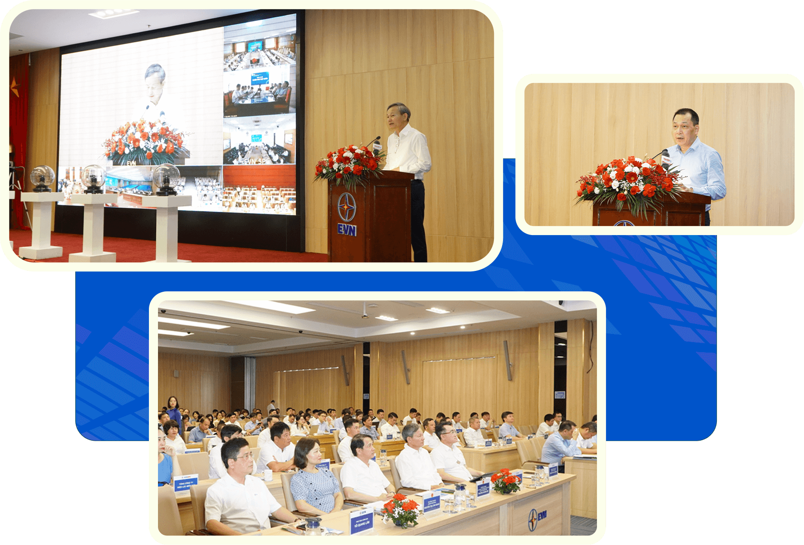
Nằm trong khuôn khổ các hoạt động truyền thông thuộc Chương trình Quốc gia về sử dụng năng lượng tiết kiệm và hiệu quả giai đoạn 2019 -2030 (VNEEP3), Văn phòng Ban chỉ đạo Tiết kiệm năng lượng tổ chức cuộc thi trực tuyến “Tìm hiểu kiến thức về sử dụng năng lượng tiết kiệm và hiệu quả năm 2023”. Hoạt động nhằm góp phần nâng cao nhận thức cộng đồng, đặc biệt là thế hệ trẻ về sử dụng hiệu quả nguồn tài nguyên, năng lượng, hướng tới hình thành lối sống xanh, bền vững.
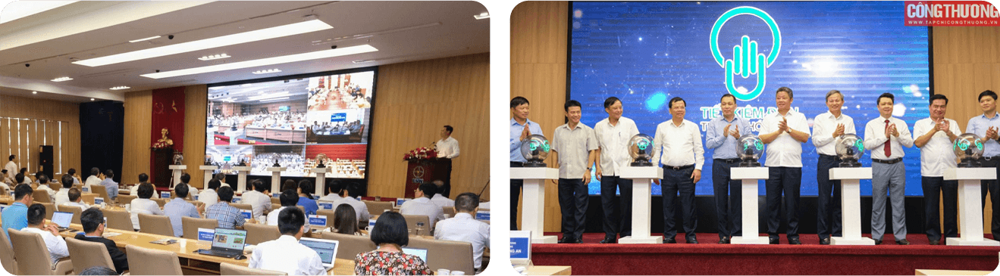
Đây là hình thức truyền thông hoàn toàn mới, sáng tạo về tiết kiệm năng lượng, đem lại hiệu quả cao, tiết kiệm chi phí. Với hình thức này, cuộc thi đã nhận được sự quan tâm, tham gia sôi nổi và đa dạng về thành phần, lứa tuổi, giới tính, từ các em học sinh, người lao động ngành điện cho đến các đơn vị như doanh nghiệp, nội trợ, người nghỉ hưu trải khắp 63 tỉnh, thành phố.”
Qua 05 kỳ thi, cuộc thi đã thu hút 129.961 người tham gia và 218.382 lượt dự thi. Con số này cho thấy sự quan tâm của cộng đồng đối với vấn đề tiết kiệm năng lượng là rất lớn, đồng thời cũng là tín hiệu tích cực cho thấy những nỗ lực của Bộ Công Thương trong việc tuyên truyền, nâng cao nhận thức cộng đồng về sử dụng năng lượng tiết kiệm và hiệu quả.
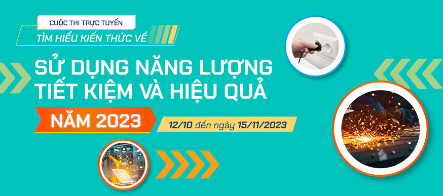
Đây là hình thức truyền thông hoàn toàn mới, sáng tạo về tiết kiệm năng lượng, đem lại hiệu quả cao, tiết kiệm chi phí. Với hình thức này, cuộc thi đã nhận được sự quan tâm, tham gia sôi nổi và đa dạng về thành phần, lứa tuổi, giới tính, từ các em học sinh, người lao động ngành điện cho đến các đơn vị như doanh nghiệp, nội trợ, người nghỉ hưu trải khắp 63 tỉnh, thành phố.”
Qua 05 kỳ thi, cuộc thi đã thu hút 129.961 người tham gia và 218.382 lượt dự thi. Con số này cho thấy sự quan tâm của cộng đồng đối với vấn đề tiết kiệm năng lượng là rất lớn, đồng thời cũng là tín hiệu tích cực cho thấy những nỗ lực của Bộ Công Thương trong việc tuyên truyền, nâng cao nhận thức cộng đồng về sử dụng năng lượng tiết kiệm và hiệu quả.
 Lãnh đạo Bộ Công Thương và các địa phương, doanh nghiệp phát động tiết kiệm điện toàn quốc năm 2023
Lãnh đạo Bộ Công Thương và các địa phương, doanh nghiệp phát động tiết kiệm điện toàn quốc năm 2023
Giải thưởng báo chí tuyên truyền về sử dụng năng lượng tiết kiệm và hiệu quả năm 2023 do Văn phòng Ban Chỉ đạo Tiết kiệm năng lượng, Bộ Công Thương phối hợp Hội Nhà báo Việt Nam tổ chức thường niên nhằm tuyên truyền, quảng bá, thực hiện Chương trình quốc gia về sử dụng năng lượng tiết kiệm và hiệu quả giai đoạn 2019 - 2030.
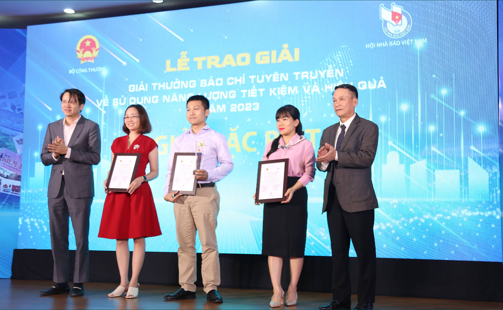
Giải thưởng có ý nghĩa quan trọng không chỉ đối với việc thực hiện các chính sách phát triển kinh tế - xã hội của đất nước, mà còn có ý nghĩa thiết thực với hoạt động nghiệp vụ, nâng cao hiệu quả của báo chí đối với đời sống xã hội. Sự vào cuộc mạnh mẽ của các cơ quan báo chí, các phóng viên nhà báo cho thấy sự mức độ quan tâm của cộng đồng, người dân, doanh nghiệp đối với sử dụng năng lượng tiết kiệm và hiệu quả.
Đánh giá về chất lượng các tác phẩm dự giải, bà Đỗ Thị Thị Thu Hằng - Trưởng Ban nghiệp vụ Hội nhà báo Việt Nam cho biết: Kể từ khi được phát động, giải đã nhận được sự hưởng ứng tích cực từ các cơ quan báo chí Trung ương và địa phương. Các tác phẩm gửi về tham dự giải đạt mức cao cả về số lượng và chất lượng so với năm trước.
Tác phẩm được chọn vào sơ khảo, chung khảo là những tác phẩm tiêu biểu, phản ánh trung thực, sáng tạo các kết quả, thành tựu của công tác tiết kiệm năng lượng với nhiều nội dung cụ thể như: tuyên truyền những điển hình tiên tiến, những kinh nghiệm hay, cách làm có hiệu quả của các địa phương, đơn vị, công trình xây dựng, phát triển công trình xanh, khu đô thị xanh, các nghiên cứu về sử dụng năng lượng tiết kiệm và hiệu quả... Bên cạnh đó, nhiều tác phẩm phản ánh những khó khăn, thách thức và định hướng việc sử dụng năng lượng tiết kiệm và hiệu quả trên cả nước trong thời gian tới.
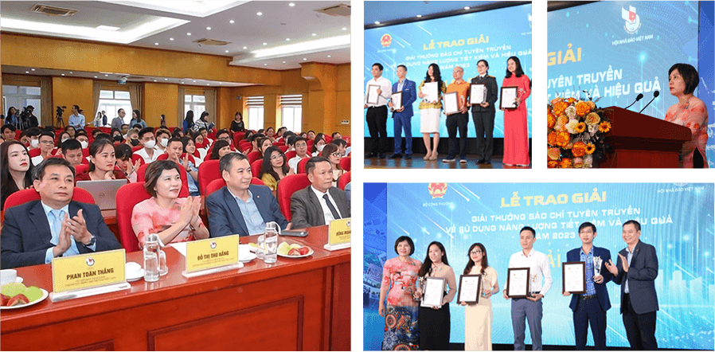
Giải thưởng báo chí tuyên truyền về sử dụng năng lượng tiết kiệm và hiệu quả năm 2023 do Văn phòng Ban Chỉ đạo Tiết kiệm năng lượng, Bộ Công Thương phối hợp Hội Nhà báo Việt Nam tổ chức thường niên nhằm tuyên truyền, quảng bá, thực hiện Chương trình quốc gia về sử dụng năng lượng tiết kiệm và hiệu quả giai đoạn 2019 - 2030.
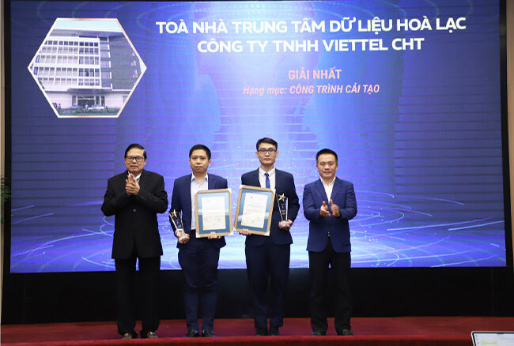
Các giải thưởng hiệu quả năng lượng năm 2023 bao gồm: Giải thưởng hiệu quả năng lượng trong công nghiệp - công trình xây dựng năm 2023, Giải thưởng Sản phẩm hiệu suất năng lượng cao nhất năm 2023 được tổ chức nhằm ghi nhận, tôn vinh những doanh nghiệp hoạt động trong lĩnh vực sản xuất công nghiệp, những công trình xây dựng tiêu biểu trong việc thực hiện các giải pháp sử dụng năng lượng tiết kiệm và hiệu quả, từ đó tạo hiệu ứng về mặt xã hội, đóng góp tích cực vào mục tiêu phát triển kinh tế xã hội, phát triển bền vững trong giai đoạn công nghiệp hóa, hiện đại hóa đất nước. Đồng thời, thúc đẩy, khuyến khích các doanh nghiệp thực hiện giải pháp quản lý và công nghệ tiên tiến nhằm đưa ra thị trường các sản phẩm có tính năng kỹ thuật vượt trội, hiệu suất năng lượng cao, tiết kiệm năng lượng.
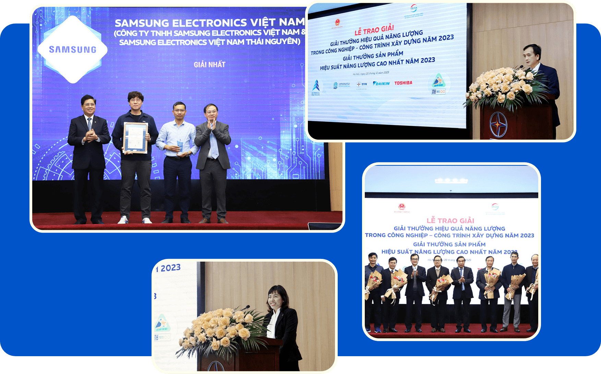
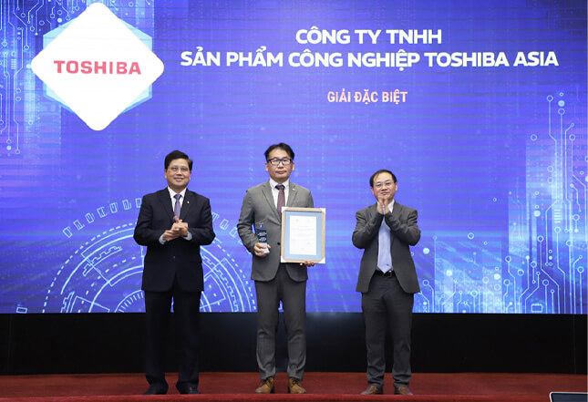
Công ty TNHH Sản phẩm công nghiệp Toshiba Asia nhận giải Đặc biệt củaThống kê của Ban Tổ chức, sau 4 mùa tổ chức, các giải thưởng hiệu quả năng lượng đã tiếp cận được tổng cộng gần 4.000 đơn vị, doanh nghiệp trên 63 tỉnh thành; thu hút hơn 600 doanh nghiệp và toà nhà tham gia. Hơn 100 doanh nghiệp, toà nhà, cá nhân đã được vinh danh. Gần 400 sản phẩm, thiết bị phổ biến trên thị trường đã được chứng nhận Sản phẩm hiệu suất năng lượng cao nhất.
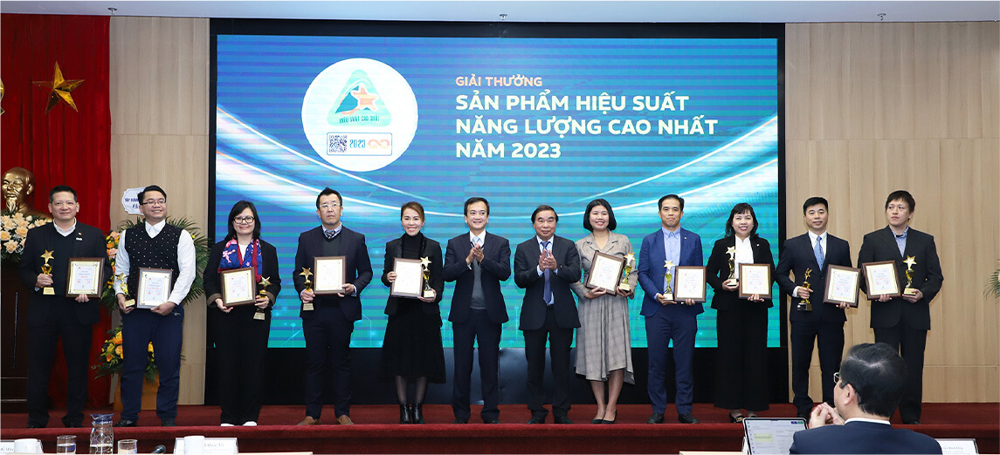
Công ty TNHH Sản phẩm công nghiệp Toshiba Asia nhận giải Đặc biệt của
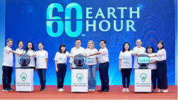
Lễ phát động toàn dân thực hiện tiết kiệm điện và Giải chạy hưởng ứng Chiến dịch Giờ Trái đất năm 2024